Paris
Willkommen in Paris
Paris kommt einem seltsam bekannt vor, weil es mehr berühmte Wahrzeichen hat als jede andere Stadt der Welt. Der elegante, schmiedeeiserne Eiffelturm, der mächtige Arc de Triomphe, der den Eingang zu den prachtvollen Champs-Élysées bewacht, die Kathedrale Notre-Dame mit ihren Wasserspeiern, laternenbeschienene Seine-Brücken und Jugendstilcafés, die sich auf korbstuhlmöblierte Terassen erstrecken – an all das denken Paris-Besucher automatisch, auch jene, die (noch) nicht hier waren. Aber entgegen dem ersten Eindruck ist das Stadtbild nicht statisch: Es gibt in Paris auch faszinierende Symbole des Zeitgeistes zu entdecken.
Egal, ob gemütliches Bistro, geheimer Supper- Club oder Drei-Sterne-Gastrotempel – jedes Pariser Etablissement schreibt sich die exquisite Zubereitung und Präsentation von Qualitätserzeugnissen auf die Fahne, die stets mit Wein serviert werden. Patisserien, boulangeries (Bäckereien), fromageries (Käseläden) und belebte, bunte Straßenmärkte sind perfekt, um sich für ein Picknick im Park einzudecken. Und einer der vielen kulinarischen Kurse passt bestimmt in den Terminplan, zum Kochniveau und ins Budget.
Pariser sind ein Synonym für Stil – und Mode ist die Stärke der Stadt. Durch aufstrebende und etablierte Boutiquen, Designerläden und Flagshipstores für Haute Couture stöbern, gehört zu jedem Besuch. Dazu gibt’s superhippe Konzeptläden, verrückte Einrichtungs- und Gartengeschäfte und prächtige Jugendstilkaufhäuser neben Vintageläden und Flohmärkten, auch stimmungsvolle Antiquariate und die Stände der bouquinistes – Secondhand-Buchhändler – am Seine-Ufer, dazu reizende Läden für Kinderkleidung und Spielzeug, Kunst- und Antiquitätenhändler, ehrwürdige Haushaltswarengeschäfte und, na klar, reichlich Delikatessenläden und Weinhandlungen.
Mit einem illustren Aufgebot an Künstlern – Renoir, Rodin, Picasso, Monet, Manet, Dalí und van Gogh, um nur einige zu nennen, die über die Jahre in Paris gelebt und gearbeitet haben – verfügt Paris über eine der wichtigsten Kunstsammlungen der Welt. Neben berühmten Museen wie dem Louvre, der bemerkenswerten impressionistischen Sammlung des Musée d’Orsay und der modernen und zeitgenössischen Kunst des Centre Pompidou zeigen eine Vielzahl kleinerer Museen Werke jeder vorstellbaren Kunstrichtung.
Sehenswertes vor Ort
-
Eiffelturm
Heute könnte sich niemand mehr Paris ohne sein Wahrzeichen vorstellen. Aber Gustave Eiffel baute den grazilen Turm – damals mit 320 m der höchste der Welt – als temporäres Ausstellungsstück für die Weltausstellung 1889. Zum Glück sorgte die Beliebtheit des Turms dafür, dass er die Weltausstellung überlebte und sein elegantes Jugendstildesign zum bestimmenden Merkmal der Skyline der Stadt wurde. Die Abenddämmerung ist die beste Zeit, um die phantastische Aussicht auf die glitzernde Stadt zu genießen und in der nagelneuen Champagnerbar auf die erklommene Höhe anzustoßen.
-
Museum Rodin
Das schöne Musée Rodin ist das romantischste Museum von Paris. Auguste Rodins ehemaliges Atelier, das 1730 gebaute Hôtel Biron, ist randvoll mit Rodins eigenen Meisterwerken wie dem Marmordenkmal an die Liebe, Der Kuss, ebenso wie mit Arbeiten seiner Muse und Schülerin, der Bildhauerin Camille Claudel, sowie anderer Künstler, deren Werke Rodin sammelte, darunter van Gogh und Renoir. Höhepunkt ist der weitläufige Skulpturengarten der Villa, der eine hinreißende Kulisse für kontemplative Arbeiten wie Der Denker bildet.
-
Der Louvre
Die Mona Lisa und die Venus von Milo sind nur zwei der sagenhaften Schätze, mit denen das erste Nationalmuseum Frankreichs glänzt, dessen Mauern vorher zunächst als Festung und dann als Königspalast diente. Das größte Museum der Welt erstreckt sich sage und schreibe 700 m entlang der Seine und mag überwältigend wirken. Aber es gibt viele Möglichkeiten, es zu erleben, auch wenn man keine neun Monate Zeit hat, um jedes ausgestellte Werk zu betrachten. Eine der besten sind die thematischen Rundgänge – von der „Kunst zu essen“ bis zu „Liebe im Louvre“.
-
Triumphbogen
Wenn irgendetwas mit dem Eiffelturm als das Symbol für Paris konkurriert, so ist das dieses prunkvolle, 1836 gebaute Denkmal, das an Napoleons Sieg in Austerlitz 1805 erinnert und das er ein Jahr später in Auftrag gab. Der Triumphbogen mit seinen kunstvollen Reliefs steht im Zentrum des Étoile (Stern) Wache, des größten Kreisverkehrs der Welt – als Fußgänger benutzt man besser den Tunnel! Von oben bietet sich in alle Richtungen ein toller Blick, so auch in die von Luxusgeschäften gesäumte Avenue des Champs-Élysées, die prächtigste aller Prachtstraßen von Paris.
-
Basilique du Sacré-Coeur
Sacré-Coeur ist ein Wallfahrtsort und das in mehrfacher Hinsicht. Man folgt den efeugesäumten Stufen auf den Hügel des berühmten Künstlerviertels Montmartre oder gleitet mit der Standseilbahn zu den weißen Kuppeln der Basilique du Sacré-Coeur (Basilika des Heiligen Herzens) hinauf. Die kapellengesäumte Basilika – mit dem schimmernden Majestas-Domini-Mosaik in der Apsis – krönt den 130 m hohen Butte de Montmartre (Hügel von Montmartre). Ihre erhöhte Lage bietet atemberaubende Blicke über Parisvon der Treppe vor der Kirche aus und, vor allem, von oben aus ihrer Hauptkuppel.
-
Centre Pompidou
Das in Primärfarben gehaltene, von innen nach außen gekrempelte Gebäude beherbergt Frankreichs Nationalmuseum für moderne und zeitgenössische Kunst, das Musée National d’Art Moderne (MNAM). Es zeigt Werke ab 1905 bis zur Gegenwart, darunter eine phantastische Matisse-Sammlung. Zum innovativen Kulturangebot des Zentrums gehören Wechselaustellungen, eine Bibliothek, Kinos und Veranstaltungsräume. Gekrönt wird das Ganze vom spektakulären Panoramablick, den man auf dem Dach genießt.
-
Notre-Dame
Ein Traum von Buntglasfensterrosetten, schwebenden Stützpfeilern und furchterregenden Wasserspeiern – die prächtige Kathedrale auf der größeren der beiden innerstädtischen Seine-Inseln ist das geografische und spirituelle Herz der Stadt. Der Bau des gotischen Wunderwerks dauerte fast 200 Jahre und es wäre wegen Schäden aus der Französischen Revolution abgerissen worden, hätte nicht zur rechten Zeit der Erfolg des Romans Der Glöckner von Notre Dame von Victor Hugo eine Petition zur Rettung ausgelöst. Die herrliche Aussicht vom Dach entschädigt für 422 Stufen.
-
Musée d’Orsay
Auch wenn sich die gefeierten Gemälde der impressionistischen und postimpressionistischen Meister wie Renoir, Gaugin, Cézanne, Sisley, Manet, Monet, Degas und Toulouse- Lautrec im Musée d’Orsay nicht verändert haben, die hervorragende Renovierung des Museums lassen sie nun erscheinen, als würden sie in einem privaten Heim hängen. Der stattliche ehemalige Bahnhof (Gare d’Orsay), der das Museum beherbergt, glänzt natürlich immer noch durch seine Jugendstilarchitektur, aber Frankreichs berühmte staatliche Sammlung von Meisterwerken aus den Jahren 1848 bis 1914 ist – mehr als je zuvor – der Star der Show.
-
Jardin du Luxembourg
Der Jardin du Luxembourg zeigt einen Schnappschuss des Pariser Lebens. Paare schlendern durch die Kastanienhaine. Kinder jagen hölzerne Segelboote um den achteckigen Teich und lachen über die Possen bezaubernder Marionetten. Alte Männer spielen an verwitterten Tischen Blitzschach. Studenten brüten zwischen Vorlesungen über ihren Büchern. Büroangestellte faulenzen in salbeigrünen Metallstühlen, um etwas Sonnenschein zu tanken. Musikanten spielen im Musikpavillion auf. Jogger drehen ihre Runden um die würdevollen Statuen. Und Freunde laufen sich hier regelmäßig über den Weg.
-
Cimetière du Père Lachaise
Paris ist wie eine Ansammlung von Dörfern, und auch dieses ausgedehnte Gelände mit gepflasterten Wegen und kunstvollen Grabmälern, mit einer Bevölkerung (gewissermaßen) von über einer Million, geht als ein Dorf durch. Der meistbesuchte Friedhof der Welt wurde 1804 gegründet. Anfangs fanden hier wegen der Entfernung zur Innenstadt nur wenige Begräbnisse statt. Die Behörden reagierten und ließen die sterblichen Überreste von Prominenten anderswo exhumieren und hierher umbetten. Der Marketingtrick funktionierte und der Cimetière du Père Lachaise ist seither die eleganteste letzte Adresse von ganz Paris.
-
Nationales Museum
des MittelaltersMittelalterliche Waffen, Rüstungen, Möbel und objets d’art aus Gold, Elfenbein und Emaille sind nicht der einzige Grund, um Frankreichs Nationalmuseum des Mittelalters zu besuchen. Auch nicht der grandiose Tapisseriezyklus Die Dame mit dem Einhorn aus dem späten 15. Jh. oder die Gärten, die mit Blumen, Kräutern und Sträuchern angelegt wurden und auf Meisterwerken des Museums abgebildet sind (darunter der Einhornwald). Hier kann man zugleich Frankreichs schönstes Beispiel mittelalterlicher Profanarchitektur, das Hôtel de Cluny, und die Überreste einer gallorömischen Therme aus der Zeit um 200 n. Chr. bewundern.
-
Canal St-Martin
Der charmante, 4,5 km lange Canal St-Martin, gesäumt von schattigen Treidelpfaden und gekreuzt von eisernen Fußgängerbrücken, sollte zubetoniert werden, als die Binnenschifffahrt an Boden verlor, bis Anwohner sich zusammentaten, um ihn zu retten. Die urige Kulisse lockte Künstler, Designer und Studenten an, die Künstlerkollektive, Secondhandläden und unkonventionelle Boutiquen sowie eine ganze Reihe von Neo-Retro-Cafés und -Bars eröffneten. Zum erhaltenen Schifffahrtserbe gehören alte Drehbrücken, die immer noch um 90 Grad aufschwenken, wenn Boote die Doppelschleusen des Kanals passieren. Eine Kanalfahrt ist die beste Art, um die weniger bekannten Wasserwege von Paris zu erleben.
-
Schick einkaufen
Paris hat, wie jede Großstadt, seine internationalen Ketten (darunter solche, die hier entstanden sind). Aber was Einkaufen in Paris wirklich besonders macht, ist die unglaubliche Auswahl an Spezialgeschäften. Kerzen vom ältesten Kerzenmacher der Welt, Pigmente vom Künstlerbedarf, der das „Klein Blue“ mit dem Künstler entwickelt hat, Lederhandtaschen aus dem hippen Haut Marais, grüne Stände der bouquinistes (Antiquaritatsbuchhändler) am Seine- Ufer und Mode unter der Glaskuppel der grande dame der Kaufhäuser, der Galeries Lafayette, sind nur ein paar Highlights.
-
Versailles
Kein Wunder, dass Revolutionäre die Palastwache des Château de Versailles massakrierten und König Ludwig XVI. und seine Königin Marie Antoinette zurück nach Paris zerrten. Dieser monumentale 700-Zimmer-Palast in einem ausufernden Park mit Springbrunnen, Teichen und Kanälen hätte damals keinen stärkeren Kontrast zu den durchschnittlichen Lebensbedingungen der Steuerzahler bilden können. Das Unesco-Welterbe Versailles ist aus der Pariser Innenstadt leicht erreichbar; es lohnt sich, einen Besuch so zu legen, dass man eine musikalische Fontänen- oder Pferdedressurshow miterlebt.
Entdecken Sie die Schönheit Paris
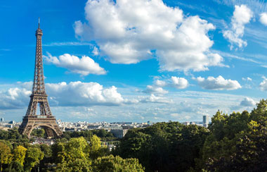 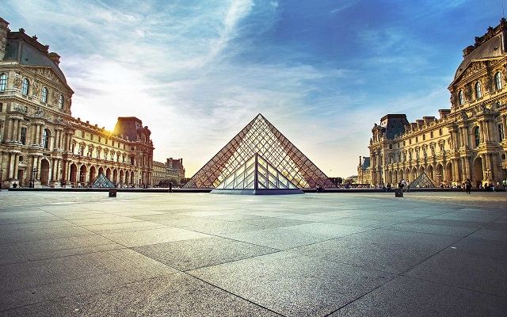 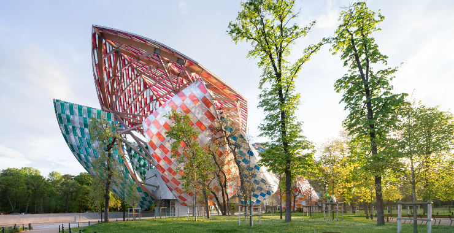
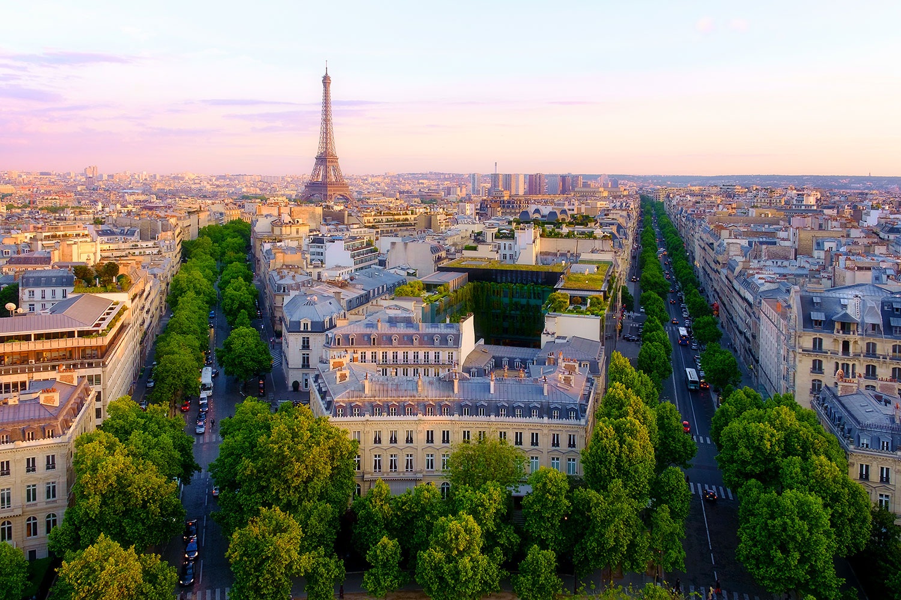
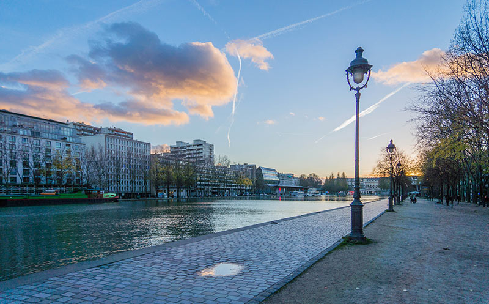
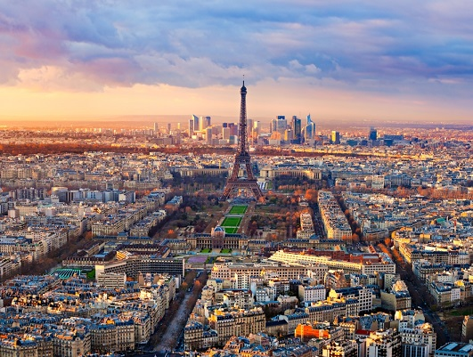
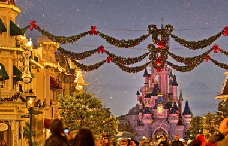
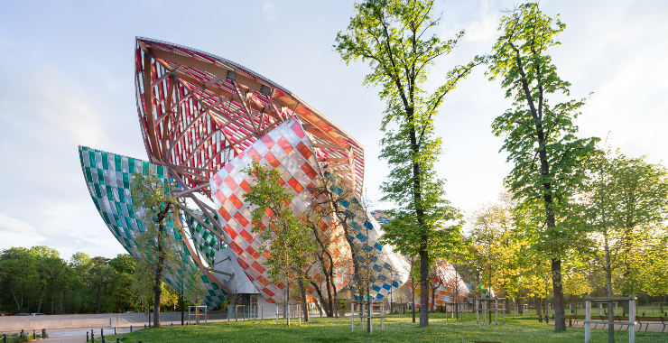
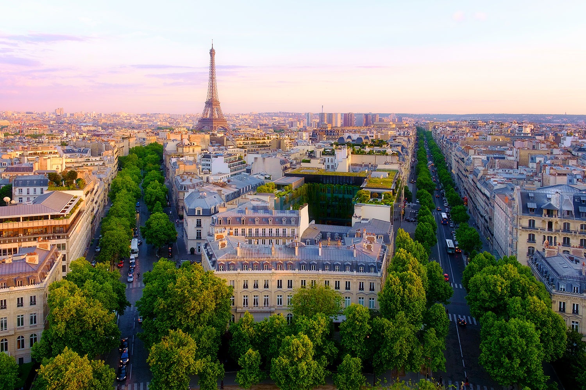
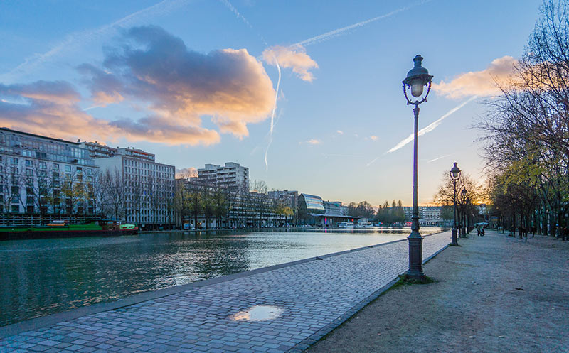
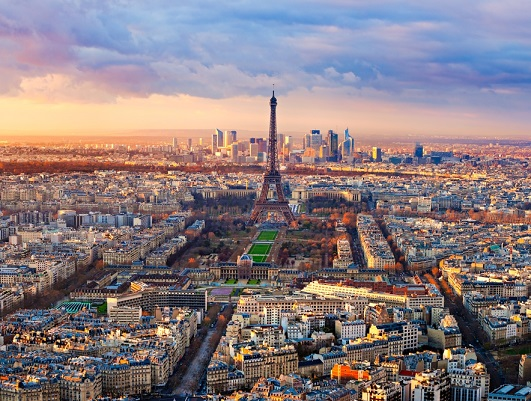
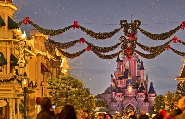